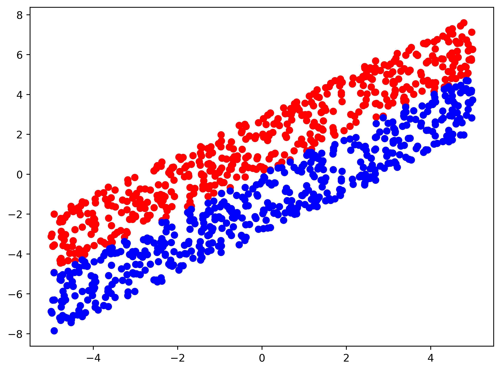

This blog post documents my implementation of the Perceptron Learning Algorithm. Please refer to my notes for more details.
import numpy as np
import pandas as pd
import matplotlib.pyplot as plt
%matplotlib inline
Generate the data:
randlist1 = np.array([np.random.uniform(-5,5) for i in range(500)])
randlist2 = np.array([np.random.uniform(0,3) for i in range(500)])
data_m1_0 = pd.DataFrame(
{
"x0": 1,
"x1": randlist1,
"x2": randlist1+randlist2,
"y" : -1
}
)
data_p1_0 = pd.DataFrame(
{
"x0": 1,
"x1": randlist1,
"x2": randlist1 - randlist2,
"y" : +1
}
)
data = pd.concat([data_m1_0, data_p1_0], axis=0)
plt.scatter(data_m1_0["x1"], data_m1_0["x2"], c="r")
plt.scatter(data_p1_0["x1"], data_p1_0["x2"], c="b")
<matplotlib.collections.PathCollection at 0x7fe661e73310>

Building perceptron learning model:
data_m1 = data[data["y"] == -1]
data_p1 = data[data["y"] == +1]
plt.figure(figsize=(6,4), dpi=150)
plt.scatter(data_m1["x1"], data_m1["x2"], c="r")
plt.scatter(data_p1["x1"], data_p1["x2"], c="b")
w = data.iloc[np.random.randint(data.shape[0])]
w0 = w[0]; w1 = w[1]; w2 = w[2]
x = np.linspace(-5,5,100)
plt.plot(x, -(w1/w2)*x - (w0/w2), "b", label="start hypothesis")
mis_m1 = data_m1[w0 * data_m1["x0"] + w1 * data_m1["x1"] + w2 * data_m1["x2"] > 0]
mis_m2 = data_p1[w0 * data_p1["x0"] + w1 * data_p1["x1"] + w2 * data_p1["x2"] < 0]
mis_data = pd.concat([mis_m1, mis_m2], axis=0)
length = mis_data.shape[0]
times = 1; wl = []
while length > 0:
wl.append(w)
mis_point = mis_data.iloc[np.random.randint(length),:]
w = w + mis_point["y"] * mis_point.iloc[0:3]
w0 = w[0]; w1 = w[1]; w2 = w[2]
mis_m1 = data_m1[w0 * data_m1["x0"] + w1 * data_m1["x1"] + w2 * data_m1["x2"] > 0]
mis_m2 = data_p1[w0 * data_p1["x0"] + w1 * data_p1["x1"] + w2 * data_p1["x2"] < 0]
mis_data = pd.concat([mis_m1, mis_m2], axis=0)
length = mis_data.shape[0]
times += 1
if times > 50000 :
print("over 50000 times loops")
break
wl.append(w)
plt.plot(x, -(w1/w2)*x - (w0/w2), "c", label=f"end hypothesis (times={times})")
plt.legend()
plt.axis("equal")
(-5.5, 5.5, -8.25263956511762, 8.298383023585334)
Convergence process of weight vector: $\frac{\mathbf{w}_{f}^{T}\mathbf{w}_t}{||\mathbf{w}_f||\cdot||\mathbf{w}_t||}$
wl1 = pd.DataFrame(wl)
wl2 = wl1[["x0", "x1", "x2"]].reset_index(drop=True)
wf = np.array([0,1,-1])
wt = wl2.dot(wf) / (np.array([wl2.loc[v].dot(wl2.loc[v]) for v in wl2.index]) * wf.dot(wf)) ** 0.5
plt.plot(
range(wt.shape[0]),
wt,
label= r"$\frac{\mathbf{w}_{f}^{T}\mathbf{w}_t}{||\mathbf{w}_f||\cdot||\mathbf{w}_t||}$"
)
plt.legend()
<matplotlib.legend.Legend at 0x7fe68c7a62e0>
Calculate the maximum number of iterations:
we have $$ \begin{aligned} \mathbf{w}{f}^{T}\mathbf{w}{t+1} &= \mathbf{w}{f}^{T}(\mathbf{w}{t}+y_{n(t)}\mathbf{x}{n(t)})\ &= \mathbf{w}{f}^{T}\mathbf{w}{t} + y{n(t)}\mathbf{w}{f}^{T}\mathbf{x}{n(t)}\ &\geq \mathbf{w}{f}^{T}\mathbf{w}{t} + \min_{n}y_n\mathbf{w}{f}^{T}\mathbf{x}n\ &> \mathbf{w}{f}^{T}\mathbf{w}{t}. \end{aligned} $$
and $$ \begin{aligned} ||\mathbf{w}{t+1}||^2 &= || \mathbf{w}{t}+y_{n(t)}\mathbf{x}{n(t)} ||^2\ &= ||\mathbf{w}{t}||^2+2y_{n(t)}\mathbf{w}{t}^{T}\mathbf{x}{n(t)} + y_{n(t)}^{2}||\mathbf{x}{n}||^2\ &\leq ||\mathbf{w}{t}||^2+||\mathbf{x}{n}||^2\ &\leq ||\mathbf{w}{t}||^2 + \max_{n}||\mathbf{x}_{n}||^2. \end{aligned} $$
define $R^2 = \max_{n}||\mathbf{x}||^2$ and $\rho = \min_{n}\frac{y_n\mathbf{w}_{f}^{T}\mathbf{x}_n}{||\mathbf{w}_f||}$
we have $$ \begin{aligned} ||\mathbf{w}t||^2 &\leq ||\mathbf{w}{t-1}||^2 + R^2\ &\leq ||\mathbf{w}{t-2}||^2 + 2R^2\ &\cdots\ &\leq ||\mathbf{w}{0}||^2 + tR^2\ &=tR^2. \end{aligned} $$
i.e. $||\mathbf{w}_t||\leq R\sqrt{t}$
since
$$ \begin{aligned} \frac{\mathbf{w}{f}^{T}\mathbf{w}t}{||\mathbf{w}{f}^{T}||\cdot||\mathbf{w}{t}||} & = \frac{\mathbf{w}{f}^{T}(\mathbf{w}{t-1}+y_{n(t-1)}\mathbf{x}{n(t-1)})}{||\mathbf{w}{f}^{T}||\cdot||\mathbf{w}{t}||}\ &=\frac{\mathbf{w}{f}^{T}\mathbf{w}{t-1}}{||\mathbf{w}{f}^{T}||\cdot||\mathbf{w}{t}||} + \frac{y{n(t-1)}\mathbf{w}{f}^{T}\mathbf{x}{n(t-1)}}{||\mathbf{w}{f}^{T}||\cdot||\mathbf{w}{t}||}\ &= \frac{\mathbf{w}{f}^{T}\mathbf{w}{t-2}}{||\mathbf{w}{f}^{T}||\cdot||\mathbf{w}{t}||} + \frac{y_{n(t-2)}\mathbf{w}{f}^{T}\mathbf{x}{n(t-2)}}{||\mathbf{w}{f}^{T}||\cdot||\mathbf{w}{t}||} + \frac{y_{n(t-1)}\mathbf{w}{f}^{T}\mathbf{x}{n(t-1)}}{||\mathbf{w}{f}^{T}||\cdot||\mathbf{w}{t}||}\ &\cdots\ &=\frac{1}{||\mathbf{w}t||}\cdot\sum^{t}{i=1}\frac{y_{n(i)}\mathbf{w}{f}^{T}\mathbf{x}{n(i)}}{||\mathbf{w}_{f}^{T}||} \ &\geq \frac{1}{||\mathbf{w}_t||}\cdot t\cdot \rho\geq \frac{t\rho}{R\sqrt{t}}\ &=\frac{\rho}{R}\sqrt{t}. \end{aligned} $$
we have that $\frac{\sqrt{t}\rho}{R}\leq 1$ and $t\leq \frac{R^2}{\rho^2}$
x_vec = data[["x0", "x1", "x2"]].reset_index(drop=True)
y = data["y"]
R = (np.array([x_vec.loc[r].dot(x_vec.loc[r]) for r in x_vec.index]).max()) ** 0.5
rhot = ((np.array([wf.dot(x_vec.loc[v]) for v in x_vec.index]) * y) / (wf.dot(wf))**0.5)
rho = rhot.min()
print(R, rho)
9.07912684264071 0.0057176953755827195
therefore the maximum iterations of this model is
maxt = (R/rho)**2
maxt
2521425.4967300384